Reading: Chapter 5
Logistics
- Signature assignment: instructions are on D2L, start early because there are several classes throughout the University which require the use of the same tools. You will need to schedule your observations, and potentially re-schedule them if weather is not nice. Bad weather will not be accepted as an excuse for not completing the assignment! The final report will be due on , but you want to start as soon as this week.
- Homework due at 11:59 assigned today
- Lab 2 dates: on , no makeup option for the in class part!
Recap
We have seen how solving the puzzle of the apparent motion of planets (wandering in the night sky less regularly than stars) lead over centuries to the development of first the empirical description by Kepler laws, and then a dynamical explanation and generalization with Newton's Universal gravitational law.
However, we have not yet discussed in detail how the information necessary for these breakthroughs came from the stars and planets to Earth. Today's lecture focuses on what is still the dominant carrier of astrophysical information on Earth: light.
Astronomical messengers
Historically, astronomy has been an observational science based on collecting objective information using light emitted, reflected, or transmitted by celestial bodies. In this sense, light is a "messenger" carrying information on astrophysical processes. Astronomers and physicists are able to extract a lot of different information from it.
N.B.: the observational nature of astronomy makes it stand out in the scientific panorama: science is usually experimental, meaning the observations are made in a controlled environment, and can be repeated and reproduced. For astrophysics we do not control the environment, and some events (e.g., a star exploding) cannot be triggered by experimentalist or repeated.
In the 20th century, we started being able to detect particles that are not light coming from space, so called "cosmic rays", which add another form of messenger. In the late 1960s the detection of neutrinos from the Sun added a particular kind of "cosmic ray", one that is very hard to detect because it has very little interactions with matter, but this means it is also a messenger that travels unimpeded from the production site (unlike light which does interact with matter). Cosmic rays and neutrinos are a different type of particle compared to the particles (photons) that make up light. They have completely different interactions with matter, and thus carry different information (and from different parts of the celestial bodies).
Then, first the indirect detection with the Hulse-Taylor pulsar in 1975 and with the direct detection of "gravitational waves" in 2015, we now have another messenger, for a total of 3 (photons, neutrinos and gravitational waves), which is why often nowadays there is an overused buzzword of "multimessenger astrophysics".
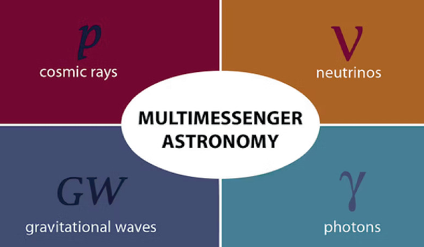
N.B.: As a physicist, I will use all the possible messengers to understand the physics, and there is nothing new on this front. We have now developed technology that allows different messengers to be used, but I will always use all the ones available.
To be able to use the detection of any of these "messengers" to probe astrophysics we need to understand how they interact with the matter they have encountered from their origin to our detector. Today we will focus on the properties of light to build up towards radiative transfer which is the study of how light filters through matter and thus what it can tell us about it.
Let there be light
What happens when you turn on a light source (e.g., light bulb in a room)?
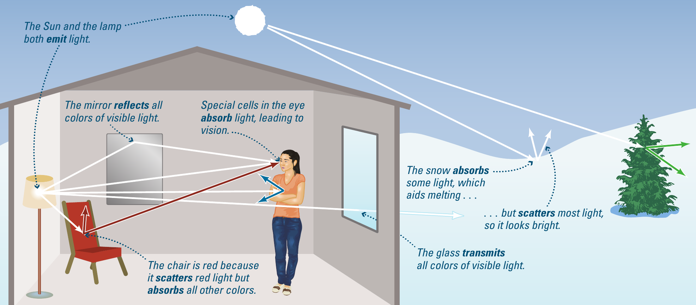
Let's assume the light source produces "white light" (even though light bulbs are typically not perfectly "white"). This will move at the speed of light and interact with the matter encountered.
These light-matter interactions will modify the light (e.g., absorbing some colors, changing the direction of propagation, slow down w.r.t. the speed in vacuum \(c\) etc.) before reaching the observer, which detects light modified. If one understands the source of light (e.g., looking at it directly), and the light-matter interactions, then one can infer from how the light is modified what are the properties of the matter that modified it when they interacted.
A more astrophysical example: exoplanet atmospheres
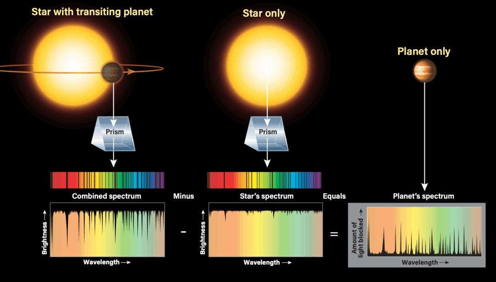
As we will re-emphasize later, planets are very dim, especially w.r.t. the stars the orbit. For the sake of argument here we can consider that they do not emit any light.
How can we study, say, the atmosphere of a planet orbiting another star if we cannot see it? We look at the light of the host star filtering through the atmosphere of the planet! (so called "transmission spectroscopy") If we understand sufficiently well the light coming out of the star, we can then see how it is changed by the exoplanet atmosphere and deduce things about it.
This is now routinely done for example with James Webb Space Telescope (JWST), and it is how we can see the impact of clouds on exoplanets, look for water and biosignatures!
White light & Spectrum
Let's start from the source of light on Earth: the Sun. It emits light of all "colors", as can be seen using a (glass) prism or diffraction grating (e.g., an old CD where the spacing of the deformations is comparable to the wavelength of light).
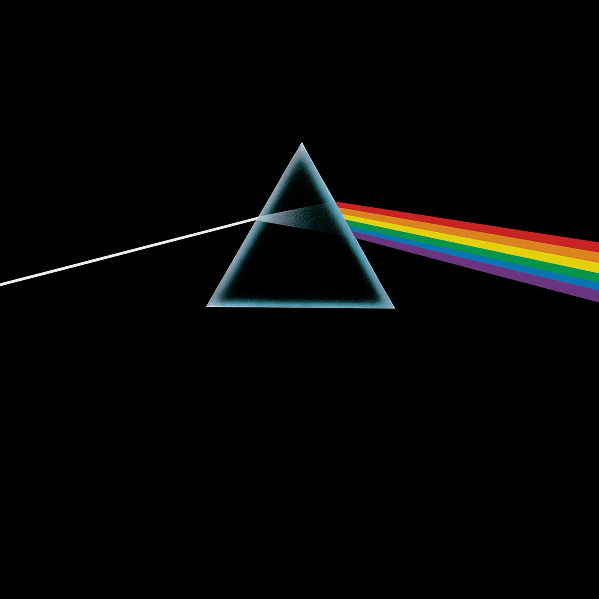
It was Newton that demonstrated that the division of white light in its components probed a property of light itself, and not of the object it was interacting with. He did this by showing that taking light of a specific color (selected with a first prism) and adding a second prism on its path no further splitting into colors occured.
Sometimes, nature provides the diffraction element: in the case of a rainbow, water droplets suspended in the air act as the prism.
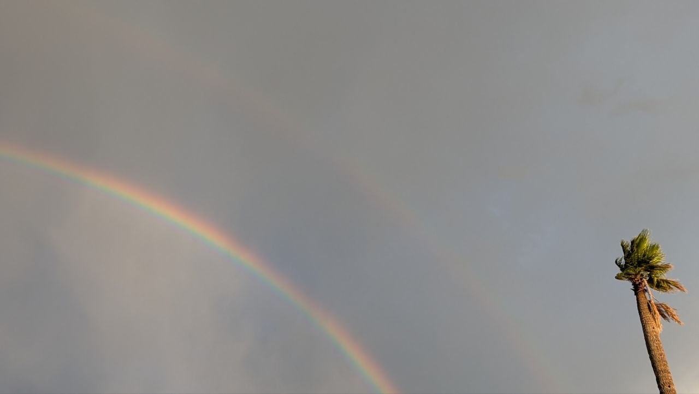
Each "color" of the rainbow corresponds to one of the dominant frequencies of light produced by the Sun. What we perceive as color is typically the difference in intensity between light at two different frequencies.
Is light a particle or wave? Both!
Therefore, to use light as an astrophysical messenger, we need to understand first light itself (this lecture's objective), and how it may interact with matter.
Let's start with the fundamental question of "what is light". This is a surprisingly non-trivial question: Newton first proposed that is it made of particles, that is there are "components" of light that carry the information like little "bullets". This almost immediately was controversial, with notably Thomas Young proposing the opposing view that light is a wave.
Experimental evidence in support of both theories was available throughout the 19th century (e.g., double-slit experiment supporting wave theory), making this question an issue with what physical and mathematical model is better at describing light in the various experiments.
The modern view is that light is both a particle and a wave! Both approaches are a valid physical and mathematical framework to describe phenomena. Note that this was first worked out for light, but actually applies to every particle in quantum mechanics (cf. de Broglie wavelength). In a sense, modern science bypasses the question and just uses whichever framework is more convenient: scientists are not concerned with the "ontological" nature of light, but they opportunistically use whichever model is more suited for the problem.
N.B.: this is analogous to choosing the reference frame, coordinate systems, units, etc. for the specific problem at hand to make it tractable!
Wave mechanics
What is a wave? It's an oscillating solution of an equation! There are many waves you encounter every day: sound waves, waves generated by a drop in a body of water, earthquakes, etc. Each wave is characterized by a few basic quantities:
- Wavelength \(\lambda\) is the distance between two peaks
- frequency \(f\) (or \(\nu\)) is the number of oscillations per unit time, typically measured in Hertz [Hz]
- amplitude \(A\) the displacement at a maximum of the wave
- propagation speed \(v\)
There is a relationship between the wavelength and the frequency: at a given propagation speed of the wave, the longer the wavelength, the more time needs to pass in between two peaks, or in other words, the lower the frequency:
Light as an electromagnetic wave
While mechanical waves (e.g., sound in air, Earthquakes in rocks) propagate in a medium (in vacuum there is no air to be compressed by your vocal chords and transport the sound to the ears of a listener!). The fact that light does not require a medium to propagate was a puzzling experimental result (by Michelson & Morrey) in the late 1800s, which opened the door for the formulation of special relativity.
Instead, light makes its own medium! To understand this, we need to think about what is actually oscillating. In a mechanical wave, e.g., the sound, what oscillates is the pressure of the gas at a given point as a function of time \(P(t, x=\bar{x})\sim P_{o}\sin(\omega t)\). In the case of light what oscillates is an electromagnetic field.
N.B.: Field is a function \(F(x,y,z,t)\) that assigns a value (scalar or vector) to every point in space and time, e.g., a velocity field is the function that assigns to each point of a fluid the velocity vector for each parcel of the fluid.
Because of Maxwell's equations that describe classical electromagnetism, an oscillating electric field creates a magnetic field, and viceversa, an oscillating magnetic field creates an electric field.
So for an electromagnetic wave, the change in electric field causes a change in magnetic field, which in turn changes the electric field, and so on leading to the propagation of the electromagnetic wave that is light.
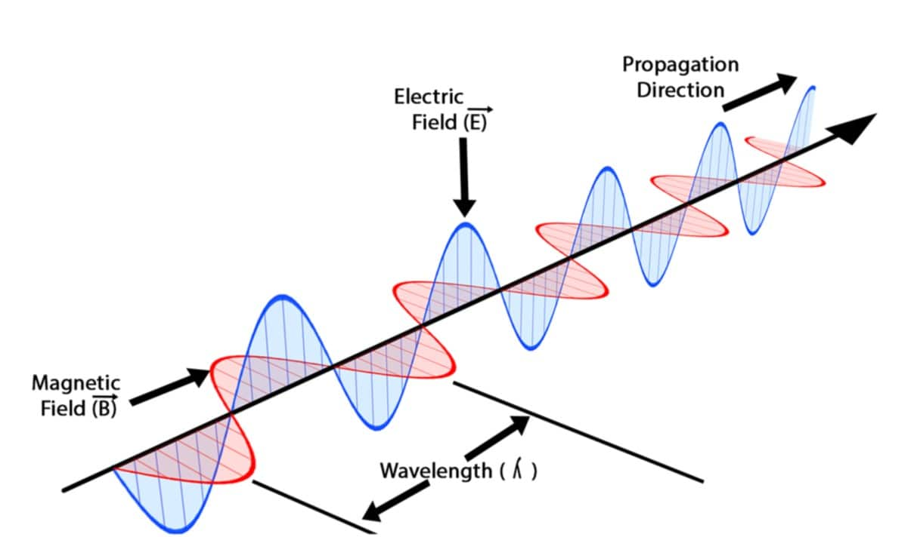
Note that \(\mathbf{E}\perp\mathbf{B}\perp\mathbf{k}\) with \(\mathbf{k}\) direction of propagation: electric field, magnetic field, and direction of propagation form an orthogonal triplet.
This means that in the case of light the "oscillations" (of \(\mathbf{E}\) and \(\mathbf{B}\)) are perpendicular to the direction in which the wave moves: light is a transversal wave.
In contrast, sound or a traffic jam starting and stopping are longitudinal waves where the direction of propagation and the oscillation are parallel (the car and the traffic move in the same direction, the sound and the pressure oscillations move in the same direction):
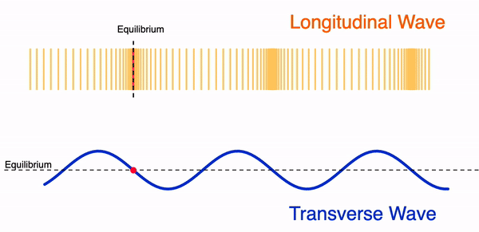
Waves carry energy but do not displace matter
Consider the transverse wave in the figure above. Take the point marked in red: as the wave passes through, it raises and sinks, but it does not move along the wave.
Clearly the wave must have some energy, because it causes (vertical) motion, but it's not moving the point along its direction of propagation.
Electromagnetic spectrum
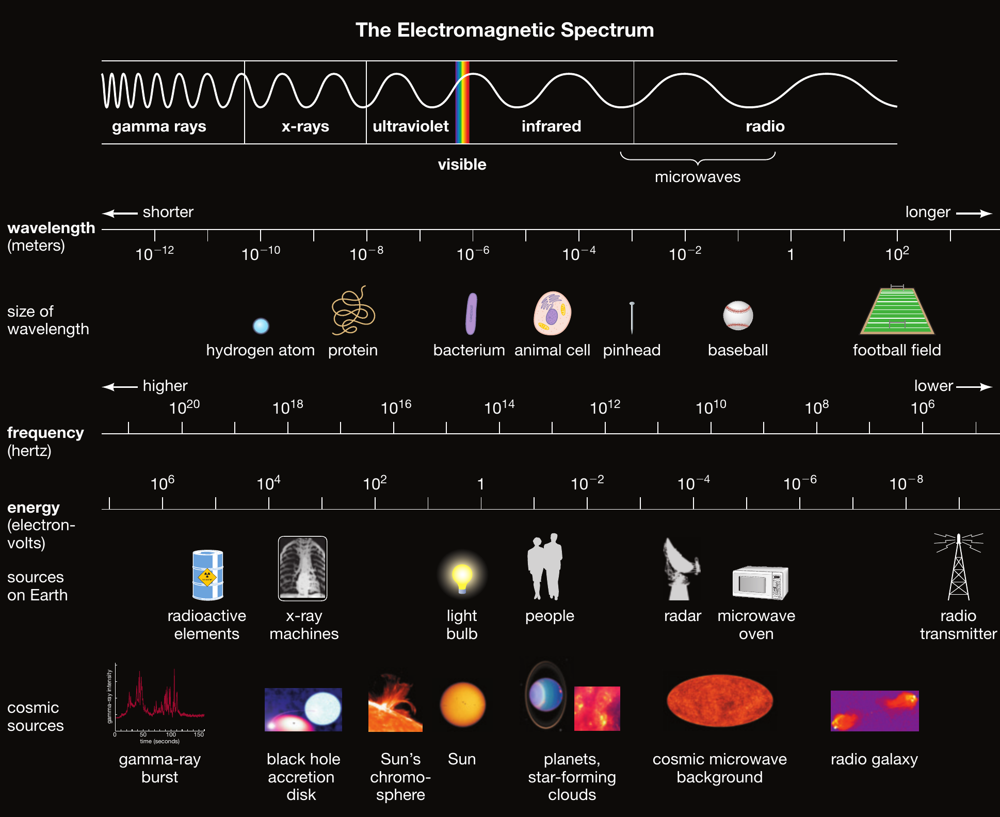
Optical
The rainbow probes the "optical" or "visible" range of light. This corresponds to the "colors" that get through the Earth atmosphere, reaching the ground: biology on Earth developed under this light and plants and animals have evolved the ability to interact with this light because that's what they had available.
This ranges from red to blue, roughly with \(\lambda\in[400-700]\) nanometers (1nm=10-9 m).
But light can also have wavelength (or equivalently frequency, since its speed in vacuum \(c\) is a constant!) outside of the optical/visible range!
Longer wavelength
At longer \(\lambda\) we find first infrared radiation \(\lambda \sim \mu m = 10^{-6} m\), and the microwaves (mm and sub-mm wavelength), and finally radio waves. These carry lower energy than the optical.
N.B.: radios communicate through light (so the time delays are ∼ distance/\(c\) and not ∼ distance/\(c_{\rm sound\)}), which encodes the sound information that a radio actually decodes to emit sounds.
Shorter wavelengths
At shorter wavelengths than optical we find the ultraviolet, and then X-rays and \(\gamma\) rays. These have higher energy and typically penetrate more materials.
Particles
In a particle description of light, we assume that it is made of little packets (or quanta) of energy. Each packet is a photon, whose energy depends on the frequency of the light:
where \(h\) is Planck's constant which has the units of [E]×[t] (so multiplied by a frequency \(f\) measured in 1/[t] one obtains an energy).
Because of Eq. (\ref{eq:lambaf}), this implies that there is a relationship between the wavelength and the energy of light: the longer the wavelength, the lower the frequency, the lower the energy!
This is why we can live under the Sun (well, our biology evolved in these conditions to permit it), but under more energetic UV radiation we would suffer: there are also ideas that a strong UV irradiation may be necessary for the development of certain key biological molecules!
Light-matter interactions
Light can interact with matter in several ways, and understanding how this affects its properties is key to use it as a "messenger" of astronomical information.
Usually, these processes require an understanding of quantum mechanics (which is the theoretical framework to study processes at atomic and sub-atomic level, and which started with recognizing that there is a limit to the subdivision of energy for light, cf. Eq. \ref{eq:epshnu}).
Broadly speaking there are 4 classes of processes:
Emission: matter produces a photon. This is for example an extremely hot incandescent light bulb that emits in the optical range.
Figure 9: Incandescent light bulb emits in the optical - Absorption: matter removes a photon and stores its energy. For instance, a blue object appears blue because of the entire optical spectrum produced by the Sun, it absorbs all colors but the blue that is instead reflected (see below).
Transmission: matter lets photons through but modifies their velocity and/or frequency. For instance, optical light can get through a window.
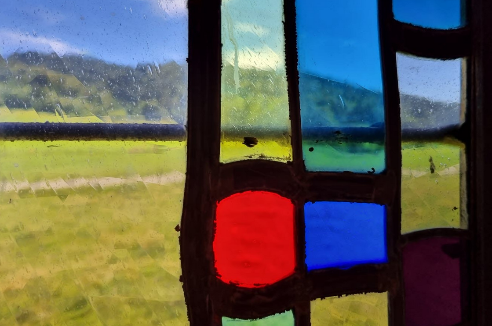
Figure 10: Transmission of light through a tainted window: not all wavelengths are transmitted! - Scattering/Reflection: matter changes the direction of a photon (and possibly other properties too), much like a mirror deflecting a light ray.
Typically, the interaction of matter and light depend on the energy of the light: the same material can be "transparent" for certain light frequencies and "opaque" to other frequencies. As an example: the windshield of a car is transparent to optical light (you do need to see through it to drive), but it is opaque to UV light (you don't get a sunburn inside your car). Viceversa, your suitcase is opaque to optical light (you typically can't see inside) but not X-rays which penetrates it.
Thermal radiation
Most objects with a finite temperature (i.e., not absolutely cold, where all the atoms/molecules making the object would have strictly zero thermal velocity) emit in the infrared:
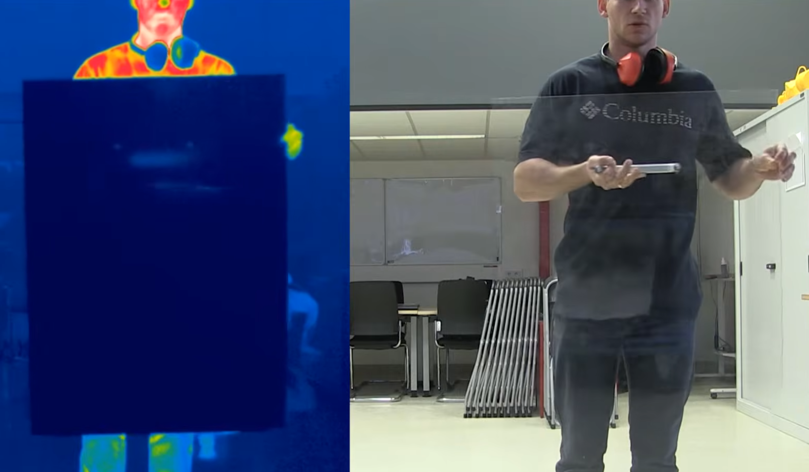
In general, a perfect emitter\absorber (that is equally good at emitting/absorbing light for any \(\lambda\)) emits per unit area a so called "black body radiation", a very specific spectrum which depends only on its temperature:

It is from trying to explain the shape of this spectrum that Max Planck introduced the constant \(h\) and opened the door to quantum mechanics.
What we can see in the figure is that: the hotter the source (blue line) the larger the emission per unit area (Stefan Boltzmann's law), and the shorter the wavelength at the peak (Wien's law). Because of the relationship between wavelength, frequency and energy, this also implies the energy of this radiation increases with temperature.
In nature, not many things are "perfect emitters/absorbers". The closest examples are:
the universe itself (the cosmic microwave background was emitted as thermal radiation once the Universe's density was low enough for photons to decouple from matter and stream freely to infinity)

stars, if they had no atmosphere!
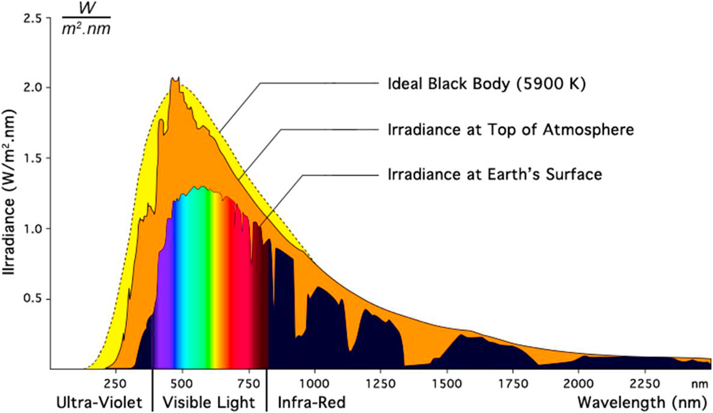
Figure 13: From the bottom of the Sun we start with a black body spectrum, which is modified as light filters through the Sun's atmosphere, and then the Earth's atmosphere.
Note that making the approximation that a star is a black body, we can get from the light that we receive its surface temperature!
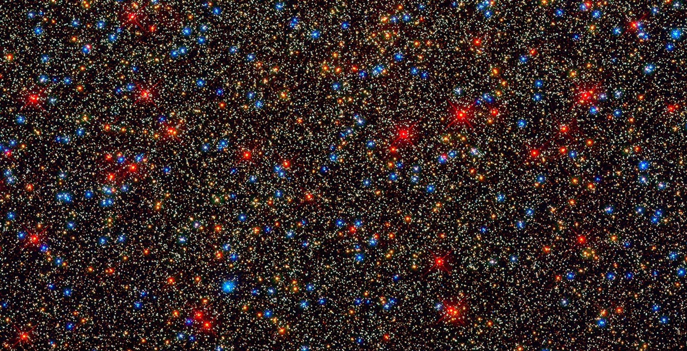
Note that this implies that all the taps of water that you encounter are wrong: the hotter the source the bluer the light! Blue should correspond to hot and red to cold!
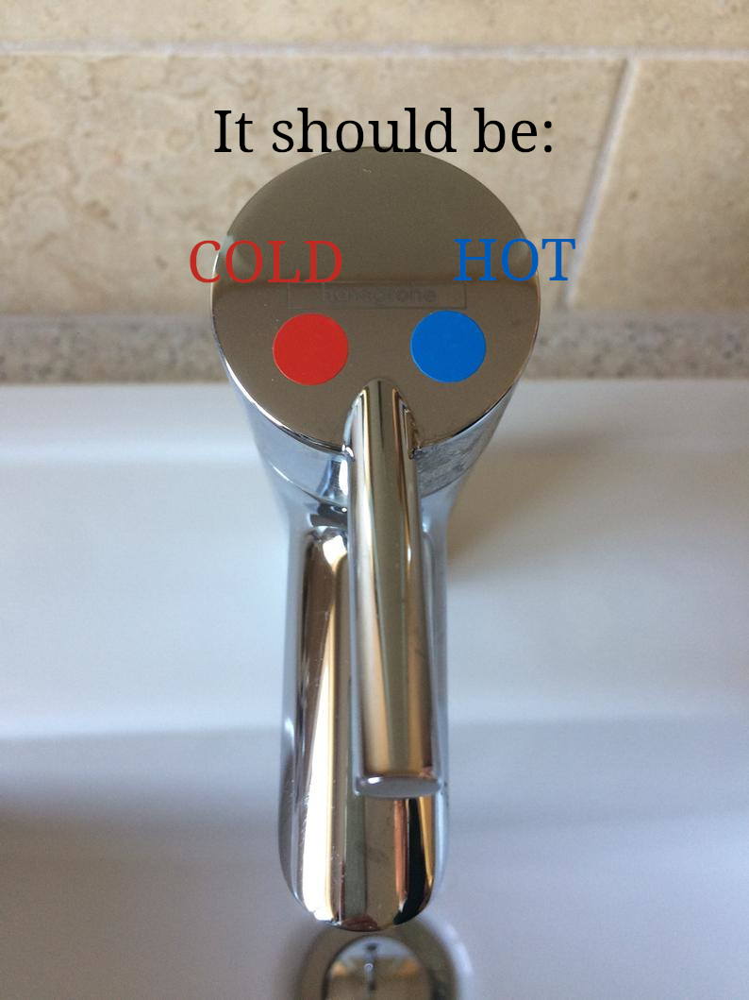